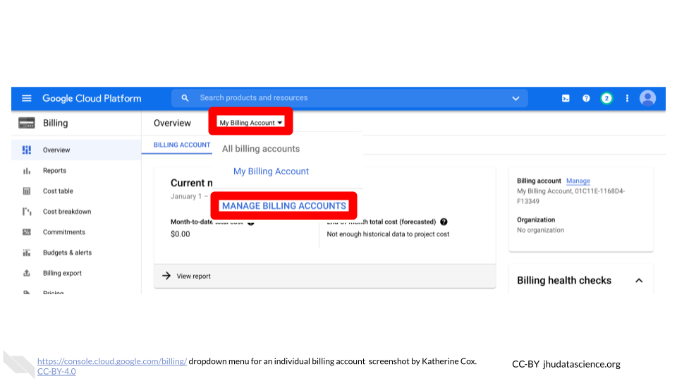
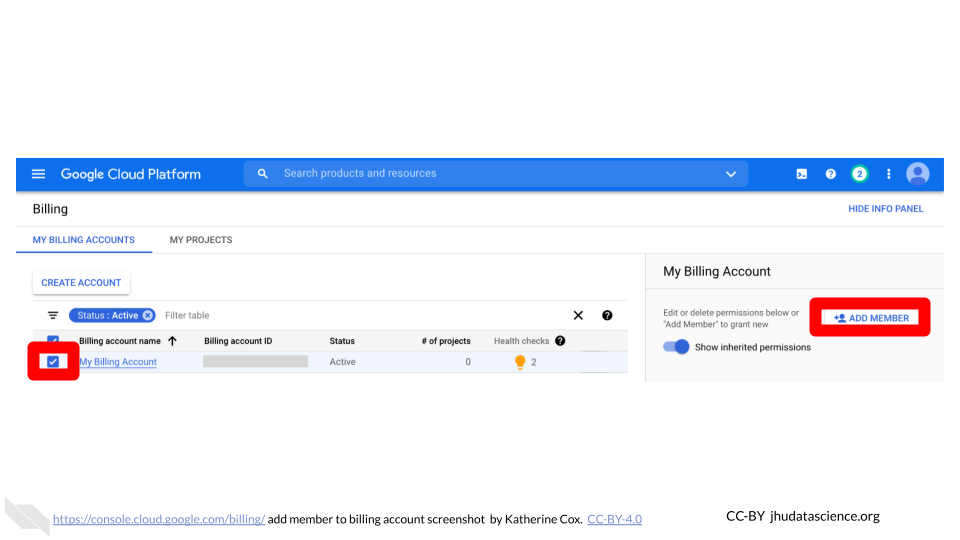
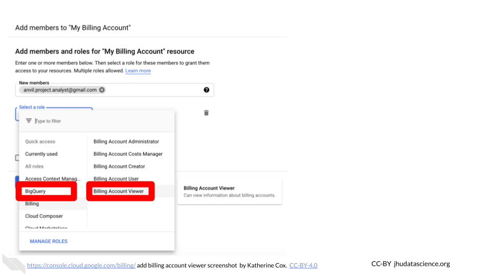

2.3 Step 2: Set Up Google Billing

Terra operates on Google Cloud Platform, and does not charge any markup. Rather than paying Terra or AnVIL, users set up billing directly with Google Cloud Platform.
Make sure to use the same Google account ID you use to log into Terra for Google Cloud Billing.
To set up billing, you must first create a Google “Billing Account”. You can create multiple Billing Accounts associated with your Google ID. We recommend creating separate Billing Accounts for different funding sources.
2.3.1 Create a Google Billing Account
Log in to the Google Cloud Platform console using your Google ID. Make sure to use the same Google account ID you use to log into Terra.
If you are a first time user, don’t forget to claim your free credits! If you haven’t been to the console before, once you accept the Terms of Service you will be greeted with an invitation to “Try for Free.”

Follow the instructions to sign up for a Billing Account and get your credits.
Choose “Individual Account”. This “billing account” is just for managing billing, so you don’t need to be able to add your lab members. You will need to give either a credit card or bank account for security. Don’t worry! You won’t be billed until you explicitly turn on automatic billing.

You can view and edit your new Billing Account, by selecting “Billing” from the left-hand menu, or going direction to the billing console console.cloud.google.com/billing

Clicking on the Billing Account name will allow you to manage the account, including accessing reports, setting alerts, and managing payments and billing. We will cover account management in greater detail below.

At any point, you can create additional Billing Accounts using the Create Account button. We recommend creating a new Billing Account for each funding source.
2.3.2 Add Users or Viewers (optional)
If you have a project manager or finance administrator who needs access to a Billing Account, you can add them with a few different levels of permissions. Generally the most useful are:
- Users have a great deal of power over spending - they can create new “Billing Projects” and control who can spend money on those projects. If you have a lab or accounts manager responsible for expenses, it may make sense to add them as a Billing Account User. If you wish to retain full control over who can spend money on GCP, you should not add any Users.
- Viewers can see the activity in the Billing Account but can’t make any changes. This can be useful for finance staff who need access to the reports, or for lab members to be able to see what their analyses are costing.
Anyone you wish to add to the Billing Account will need their own Google ID.
To add a member to a Billing Project:
Log in to the Google Cloud Platform console using your Google ID.
Navigate to Billing
You may be automatically directed to view a specific Billing Account. If you see information about a single account rather than a list of your Billing Accounts, you can get back to the list by clicking “Manage Billing Accounts” from the drop-down menu.

Check the box next to the Billing Account you wish to add a member to, click “ADD MEMBER”.

Enter their Google ID in the text box. In the drop-down menu, mouse over Billing, then choose the appropriate role.

Click “SAVE”.